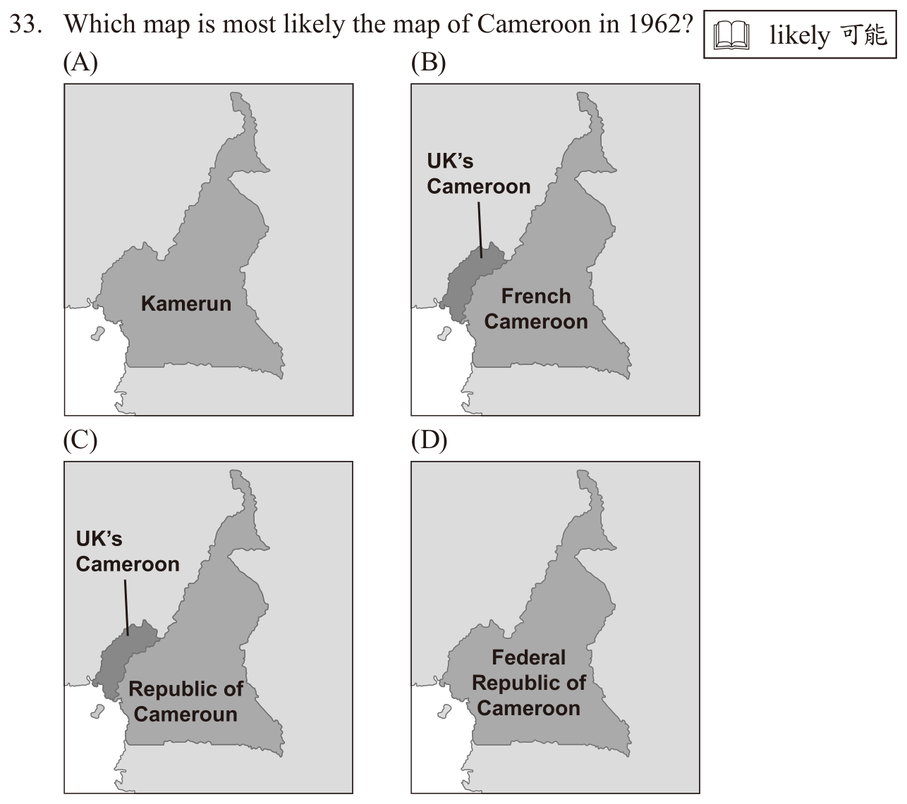

開卷有益 ／
國中教育會考 ／ 英語 ／ 111 年111 年國中教育會考英語試題與答案
這一頁是民國 111 年國中教育會考英語的整份歷屆試題，共 43 題，題目與標準答案出自心測中心 會考歷屆試題（依著作權法 §9，考試試題不受著作權保護），其中 43 題附有詳解。以下逐題列出題幹、選項與答案；要計時作答或記錄成績，請用線上練習。
線上作答這一科 →
全部 43 題
第 1 題
Look at the picture. The woman is putting on the cake.
（A） candles（B） forks（C） plates（D） strawberries答案：（A）
詳解與考點 正解：題幹的 putting on the cake 要配合圖片中女子正在把細長物插到蛋糕上的動作。candles 表「蠟燭」，生日蛋糕上常插蠟燭，put candles on the cake 的搭配也正確，因此 A 為正解。
B：forks 表「叉子」，圖中的叉子是餐具，應放在桌上，不是插在蛋糕上。
C：plates 表「盤子」，圖中的盤子也擺在桌上，不能符合女子放到蛋糕上的動作。
D：strawberries 表「草莓」，可作蛋糕裝飾，但圖中女子正在插的是蠟燭，非放草莓。
本題考點：看圖字彙——先以圖片辨認物品，再以句中動作選擇名詞；常用搭配——put candles on a cake 指在蛋糕上插蠟燭。
第 2 題
The movie starts at two o’clock, let’s meet at the theater at one forty-five.
（A） so（B） or（C） if（D） because答案：（A）
詳解與考點 正解：題幹以電影2點開演為前提，約1點45分在戲院見面是這項安排的結果，應用表結果的 so。so 意為「所以」，連接前因與後果，故 A 為正解。
B：or 意為「或者」，表選擇，兩句不是二選一關係。
C：if 意為「如果」，表條件，題幹不是假設條件。
D：because 意為「因為」，會把見面時間當成電影開演的原因，因果方向顛倒。它看起來對，是因為兩句確有先後關係，但先後不等於原因。
本題考點：連接詞語義——so 用於「原因／情況＋結果」；句意判斷——先確認兩句的邏輯關係，再選連接詞。
第 3 題
Peter is afraid of the dark. He even leaves the on when sleeping.
（A） computer（B） fans（C） lights（D） music答案：（C）
詳解與考點 正解：Peter is afraid of the dark 表示 Peter 怕黑；睡覺時仍把燈開著才能照亮環境，lights 指「燈」，故 C 為正解。
A：computer 指「電腦」，開著電腦不是怕黑時最直接的行為，錯誤。
B：fans 指「電風扇」，用來送風，不能驅除黑暗，錯誤。
D：music 指「音樂」，開著音樂可能舒緩情緒，卻不能提供照明，錯誤。它看起來對，是因為害怕時可能想聽音樂，但題幹的關鍵是 afraid of the dark。
本題考點：語境詞彙——依前後文的因果關係選字；leave the lights on——表示「讓燈持續開著」，用於需要照明的情境。
第 4 題
Pam is a baseball player; she has more fans than any other player on her team.
（A） boring（B） heavy（C） popular（D） rich答案：（C）
詳解與考點 正解：題幹以 more fans than any other player 表示 Pam 的球迷比隊上任何球員都多，觸發「受歡迎」的語意判斷；popular 意為「受歡迎的」，故 C 為正解。
A：boring 意為「無聊的」，不能由球迷很多推出。
B：heavy 意為「重的」，與球迷人數無關。
D：rich 意為「富有的」，題幹未提供財富資訊。
本題考點：語境詞彙——more fans 表示受到許多人喜愛，應選含「受歡迎」語意的 popular；詞義判斷須以句中線索為準，不能把人物特徵任意延伸為財富或外貌。
第 5 題
I did not do my homework, so my teacher said I stay after school to finish it.
（A） failed to（B） had to（C） hoped to（D） used to答案：（B）
詳解與考點 正解：題眼是老師要求未做作業的學生放學後留下完成作業，須用表義務或必要的 had to。had to 意為「不得不、必須」，此處說明過去受要求而必須留下，故 B 為正解。
A：failed to 意為「未能」，後面接原形動詞，不能表示被要求留下。
C：hoped to 意為「希望」，語氣是個人願望，與老師的強制要求不合。
D：used to 意為「過去常常」，表習慣，不表這一次必須補做作業。
本題考點：情態語意——had to 表過去的必要或義務；語境判斷——遇到命令、規定或不得不做的情境，選能表強制的動詞片語。
第 6 題
Kevin has only enough money for the bag or the shoes. That is a hard to make because he likes them both.
（A） choice（B） gift（C） rule（D） trick答案：（A）
詳解與考點 正解：題幹說 Kevin 的錢只夠買包包或鞋子，關鍵是二選一，因此要填 choice。make a choice 是「做選擇」的固定搭配，choice 意為「選擇」，故 A 為正解。
B：gift 意為「禮物」，不能和 make 構成題意所需搭配。
C：rule 意為「規則」，與在兩樣物品間決定買哪一樣無關。
D：trick 意為「技巧、把戲」，不是二選一的決定。
本題考點：名詞語義——choice 指在可行方案中作出的選擇；固定搭配——make a choice 表「做選擇」。
第 7 題
It was for us to answer the math question because we’ve done the same kind of questions many times.
（A） common（B） easy（C） safe（D） special答案：（B）
詳解與考點 正解：題幹的 because 說明原因是已做過同類題很多次，熟悉後回答數學題會很容易，應填 easy。easy 意為「容易的」，故 B 為正解。
A：common 意為「常見的」，可形容題型常見，卻不能說明作答為何不費力。它看起來對，是因為題幹提到同一類題做過很多次。
C：safe 意為「安全的」，與能否回答問題無關。
D：special 意為「特別的」，與反覆練習所帶來的熟練感不合。
本題考點：形容詞語義——easy 表做起來不困難；因果推論——由「多次練習」推得「回答容易」，不可只抓題幹重複出現的字面意思。
第 8 題
Although it took me lots of time a big meal for ten people, I was happy that everyone enjoyed it.
（A） prepare（B） to prepare（C） preparing（D） prepared答案：（B）
詳解與考點 正解：題幹的 it took me lots of time 觸發固定句型 it takes／took + 人 + 時間 + to V，表示「某人花多少時間做某事」。因此應填 to prepare；to prepare 表「準備」，B 為正解。
A：prepare 是原形動詞，缺少句型所需的 to，錯誤。
C：preparing 是動名詞，但 take + 人 + 時間後應接 to V，不接動名詞，錯誤。
D：prepared 是過去式或過去分詞，不能接在此句型中，錯誤。
本題考點：花費時間句型——it takes／took + 人 + 時間 + to V；不定詞用法——to prepare 作真正主詞，it 為形式主詞。
第 9 題
Don’t let the children swim in the river. We don’t know how it is. It could be dangerous.
（A） deep（B） far（C） long（D） thick答案：（A）
詳解與考點 正解：題眼是不可讓孩子下河游泳，因為不知道河有多深而可能危險，應填 deep。deep 意為「深的」，可用 how deep 問水深，故 A 為正解。
B：far 意為「遠的」，不能用來描述河水的深淺。
C：long 意為「長的」，描述河流長度不會直接構成眼前游泳的危險。
D：thick 意為「厚的、濃的」，不適合描述河的水深。
本題考點：形容詞搭配——how deep 用來問深度；語境推論——河水深淺未知會增加溺水風險。
第 10 題
Bob is of the boys in the family. He never does any housework. His brothers at least take out the garbage sometimes.
（A） lazier（B） the lazy（C） the lazier（D） the laziest答案：（D）
詳解與考點 正解：題幹以 of the boys 限定比較範圍，並說 Bob 從不做家事、兄弟至少偶爾倒垃圾，表示他是所有男孩中最懶者，須用最高級 the laziest，故 D 為正解。
A：lazier 是比較級，只用於兩者比較，少了最高級所需的 the。
B：the lazy 是形容詞原級，不能表「最懶」。
C：the lazier 仍是比較級，不能用於三人以上的最高程度比較。
本題考點：比較級與最高級——兩者比較用比較級，三者以上或有明確群體範圍時用 the＋最高級；字尾變化——lazy 改 y 為 i，再加 -est 成 laziest。
第 11 題
Aunt Gina has lived in this town for more than sixty years, so she it very well.
（A） will know（B） knew（C） knows（D） was going to know答案：（C）
詳解與考點 正解：題幹的 for more than sixty years 表示吉娜阿姨長期住在此地，而 so 說明她現在很了解這個城鎮，應用現在簡單式 knows。know 表「了解」，故 C 為正解。
A：will know 是未來式，與目前已很了解的事實不合，故錯誤。
B：knew 是過去式，未表達現在仍知道，故錯誤。
D：was going to know 是過去未來式，與現在狀態不合，故錯誤。
本題考點：時態選擇——現在仍成立的狀態用現在簡單式；判準——看到長期經驗造成的目前事實時，選現在式而非過去或未來式。
第 12 題
We won’t see the sun even after the typhoon leaves, because the news said that heavier rain will soon .
（A） catch（B） follow（C） move（D） stop答案：（B）
詳解與考點 正解：題幹說颱風離開後仍看不到太陽，新聞預報更強的雨會接著到來，應填 follow。follow 意為「跟隨、接續而來」，heavier rain will follow 符合氣象語境，故 B 為正解。
A：catch 意為「抓住、趕上」，不能自然表示降雨接續發生。
C：move 意為「移動」，未交代雨移往何處，也不表接續。
D：stop 意為「停止」，與更強的雨將到來相反。
本題考點：動詞語義——follow 可表事件在另一事件後接續發生；語境判讀——由 even after 與 heavier rain 判定天候未轉晴。
第 13 題
Yesterday when I got home from work, my brother for dinner, so he invited me to join him.
（A） goes out（B） went out（C） has gone out（D） was going out答案：（D）
詳解與考點 正解：題幹 Yesterday when I got home from work 提供過去的時間點，哥哥當時正要出門吃晚飯，需用過去進行式表示過去某時正在進行的動作。was going out＝was＋going，故 D 正確。
A：goes out 是現在式，不能對應 yesterday 的過去時間。
B：went out 是單純過去式，較像已完成出門，未表達我到家當時正在準備出門。
C：has gone out 是現在完成式，通常連結現在，不合明確的過去時間點 yesterday。
本題考點：過去進行式——was／were＋V-ing 表示過去某一時間點正在進行的動作；時間線判斷——when 引出過去時間點時，背景中持續的動作常用過去進行式。
第 14 題
You were not to lend Amy money. She never gives back what she borrows.
（A） crazy（B） helpful（C） wise（D） wrong答案：（C）
詳解與考點 正解：題幹說 Amy 借東西從不歸還，因此不該借她錢；not wise 意為「不明智的」，正好評價此決定，故 C 為正解。
A：crazy 意為「瘋狂的」，語氣過重，題幹是在作理性判斷。
B：helpful 意為「有幫助的、樂於助人的」，not helpful 指沒有幫助，沒有表達借錢決定不明智。
D：wrong 意為「錯誤的」，文法可通，但不如 wise 精確呼應「是否明智」的勸告語氣。它看起來對，是因為借錢確實不妥；但題幹的慣用評價是 not wise。
本題考點：形容詞語義——wise 表明智，not wise 表不明智；語用判斷——勸告他人不要做某事時，依語氣選最精確的評價詞。
第 15 題
Have you found a summer job yet? Mr. Firth someone to take care of his kids during the vacation. Maybe you can talk to him.
（A） has looked for（B） is looking for（C） looks for（D） was looking for答案：（B）
詳解與考點 正解：題眼是 Maybe you can talk to him，表示 Mr. Firth 現在仍在找暑假照顧孩子的人，應用現在進行式 is looking for。look for 意為「尋找」，is looking for 表正在進行的尋找，故 B 為正解。
A：has looked for 是現在完成式，著重已發生的經驗或結果，不能清楚表現在仍在徵人。
C：looks for 是現在簡單式，常表習慣或固定事實，不合此時的徵人情境。
D：was looking for 是過去進行式，把尋人時間放在過去，與現在可去詢問不合。
本題考點：現在進行式——be＋V-ing 表現在正在進行的動作或暫時狀態；片語——look for 表尋找，不可與 find 混用。
第 16 題
David looked out of the balcony window and saw a woman get in his car away.
（A） drive（B） drove（C） and drive（D） and drove答案：（C）
詳解與考點 正解：題幹的 saw 是感官動詞，先接 woman get in his car，再以 and 連接另一個看見的動作，兩個動詞都用原形，應填 and drive，故 C 為正解。
A：drive 雖是原形，但少了 and，不能與前面的 get in 並列。
B：drove 是過去式，感官動詞 see 後此處應接原形動詞。
D：and drove 有連接詞，卻把第二個並列動詞誤用為過去式。它看起來對，是因為 saw 為過去式；但 saw 的時態不會改變受詞後原形動詞的形式。
本題考點：感官動詞——see＋受詞＋原形動詞，表示看見動作完整發生；並列結構——同受 see 支配的動詞以 and＋原形連接。
第 17 題
The police haven’t found the little girl who at a supermarket. They’ll keep doing all they can to find her.
（A） took away（B） taken away（C） has taken away（D） was taken away答案：（D）
詳解與考點 正解：關係子句修飾 the little girl，小女孩是被人帶走的受事者，且事件已發生，須用過去式被動語態 was taken away。take away 意為「帶走」，was taken away 意為「被帶走」，故 D 為正解。
A：took away 是主動語態，會變成小女孩帶走別人，語意錯誤。
B：taken away 是過去分詞，前面缺少 be 動詞，不能單獨作完整謂語。
C：has taken away 是現在完成主動語態，同樣把小女孩誤作帶走他人的人。
本題考點：被動語態——受事者作主詞時用 be＋過去分詞；時態判斷——警方尚未找到女孩，帶走事件已在過去發生，故用 was taken away。
第 18 題
Buses to the airport only come once every hour, and we just missed . Why don’t we take a taxi?
（A） another（B） it（C） one（D） them答案：（C）
詳解與考點 正解：題幹說往機場的公車每小時才來一班，且剛錯過一班，須用 one 指同類中不特定的一個；missed one 意為「剛錯過一班公車」，故 C 為正解。
A：another 可單獨作代名詞，表示「另一個、再一個」，並非一定要接名詞；但此句尚未建立先前已錯過一班、現在又錯過另一班的語境，只是首次指稱剛錯過的某一班公車，故用 one 而不用 another。
B：it 指已知的特定事物；此處是同類公車中的一班，應用 one。
D：them 為複數，與此處剛錯過的一班公車不合。
本題考點：代名詞辨析——one 代替同類中不特定的單數可數名詞；it 代替特定且已知的事物；another 可作代名詞，表示同類中的另一個或再一個，須依前文是否已建立對比判斷。
第 19 題
Ariel every night for a week before her Chinese test and got a very good grade.
（A） studied（B） studies（C） has studied（D） was going to study答案：（A）
詳解與考點 正解：題幹的 got a very good grade 是明確的過去結果，前面的準備動作也已完成，應用過去簡單式 studied。studied 意為「讀書、準備」，故 A 為正解。
B：studies 是現在簡單式，常表習慣，與 got 的過去時間不一致。
C：has studied 是現在完成式，會把動作連到現在，不合已完成的考前一週情境。
D：was going to study 表過去打算讀書，未必真的實行，與後文取得好成績所陳述的完成事實不合。
本題考點：過去簡單式——敘述已結束的過去事件時用 V-ed；時態線索——and got 把前後兩個動作都定位於過去。
第 20 題
While reading this story, Brad saw the word “trolling” and didn’t know what it meant. Josh turned off the screen and sat back. “Why are they trolling me like this?” He didn’t understand. They wanted him to share what he thought about the show, and he did. And now look what he got. In the end, all they wanted was nice words. He found several meanings of the word in a dictionary. Which one should Brad choose?
（A） To celebrate in song.（B） To make someone or something move around.（C） To pull a fishing line through the water, often from a boat.（D） To write something on the Internet to hurt someone or make them angry.答案：（D）
詳解與考點 正解：題眼是 Josh 分享對節目的看法後遭人以惡意內容回應，並問「Why are they trolling me like this?」，故 trolling 在此指在網路上寫內容傷害或激怒他人。D 的定義完全符合語境，故 D 為正解。
A：To celebrate in song 是以歌唱慶祝，與 Josh 受到負面對待無關。
B：To make someone or something move around 是使人或物移動，與網路留言無關。
C：To pull a fishing line through the water, often from a boat 是拖曳釣線的釣魚義，與畫面中的網路互動無關。它看起來對，是因為 trolling 原本可指釣魚動作，但本題由 screen 與分享想法判定為網路用語。
本題考點：語境字義——多義字須由前後文選定詞義；網路用語——troll／trolling 指以網路言論故意傷害或激怒他人。
第 21 題
What does Tea-Rock celebrate?
（A） Their sales in 20 countries.（B） The coming out of their 20th kind of tea.（C） Their 20th year of business.（D） The opening of their 20th store in the USA.答案：（C）
詳解與考點 正解：題目問 Tea-Rock 慶祝的事項，閱讀廣告時應鎖定 20th year 或 anniversary 等週年資訊；慶祝開業第20年正是 C，故 C 為正解。
A：在20個國家銷售是市場範圍，不等於慶祝事項。
B：推出第20種茶是產品數量，與週年資訊不同。
D：在美國開第20家店是門市數量，非廣告所述的20週年。
本題考點：廣告細節題——先找題幹專有名詞與數字，再核對它修飾的是週年、產品、銷售地或門市；anniversary／20th year 表開業週年。
第 22 題
Here is the postcard Jason is going to send to Tea-Rock 20. What else does he need to put on the postcard before he sends it?
（A） His age.（B） His address.（C） His birthday.（D） Another picture of the tea cup.答案：（C）
詳解與考點 正解：題眼是寄出 Tea-Rock 20 的活動明信片前還缺少什麼；依活動要求，Jason 必須填寫生日才能參加抽獎，故 C 的 His birthday 為正解。
A：His age 並非活動要求填寫的欄位。
B：His address 通常已填在明信片的寄件資料中，不是題圖所缺的活動必填資訊。
D：Another picture of the tea cup 不是參加活動的必要條件。
本題考點：圖表與活動說明閱讀——逐一核對已填欄位與參加條件；必填資訊——題圖要求生日時，年齡不能替代生日。
第 23 題
What can we learn about sugar from the infographic?
（A） There are 4 g of sugar in 66 g of ice cream.（B） A woman can eat as much sugar a day as a man can.（C） Taiwan eats more sugar for each person than the US does.（D） 400 ml of rice milk has less sugar than 400 ml of grape juice.答案：（D）
詳解與考點 正解：題幹問圖表能得知的糖分資訊，須比較相同 400 ml 飲品的含糖量。圖表顯示 rice milk 表「米漿」的糖量少於 grape juice 表「葡萄汁」，所以 D 的敘述正確。
A：圖表中的冰淇淋糖量並非 66 g 中含 4 g 糖，數據不符。
B：圖表顯示女性每日建議糖量低於男性，不能說女性可吃與男性一樣多。
C：圖表未支持臺灣每人糖攝取量高於美國的說法。
本題考點：英文圖表判讀——比較數值時須確認相同單位與對象；字彙辨識——rice milk 是米漿，grape juice 是葡萄汁，less sugar than 表「糖量少於」。
第 24 題
What can be a reason why the list of “Sugar that is hidden in foods and drinks” is put in the infographic?
（A） To help us understand how sugar hurts our body.（B） To show what kinds of foods and drinks are popular with children.（C） To tell us that we often have more sugar than we can without knowing it.（D） To let us know how much sugar is enough to make foods and drinks taste good.答案：（C）
詳解與考點 正解：題幹的「Sugar that is hidden in foods and drinks」強調糖藏在食物與飲料中、不易察覺；清單的目的在提醒人們常在不知情下攝取超過所需的糖。C 的 without knowing it 表「在不知不覺中」，符合這個警示目的，因此 C 為正解。
A：清單不是用來解釋糖如何傷害身體，而是揭示食物與飲料中隱藏的糖。
B：清單的重點不是兒童喜愛哪些食物與飲料。
D：清單不是說明要加多少糖才會好吃，而是提醒實際攝取量可能被低估。
本題考點：作者意圖——由 hidden、without knowing it 等關鍵語意判斷警示目的；字彙辨識——hidden 表「隱藏的」，提醒讀者注意不易發現的資訊。
Darrell : Marina…Marina…MARINA! Marina : Oh, sorry. I didn’t hear you. I was thinking about my homework. Darrell : What’s it about? Marina : Well, I need to draw a future house for my art class, but I haven’t got any ideas. Maybe I should go to the library and look for something useful. Darrell : Or you can try Pinterest. Marina : Isn’t it a shopping app? Darrell : Not really. Many people share their works on Pinterest and tell you how they made them. I’m sure you can get some ideas there. Marina : Sounds like you use it often. Darrell : Yeah. Just last week I went there and found the A to Z of making chocolate cake—from choosing good chocolate to baking the cake to making sugar flowers on top. Marina : Really? I’ll check it out later. Thanks a lot.
第 25 題
Why did Darrell tell Marina to go to Pinterest?
（A） To find some examples for her homework.（B） To shop for things that are needed for art classes.（C） To meet new friends who have the same interests.（D） To share her works and tell people how they are made.答案：（A）
詳解與考點 正解：題眼是 Marina 要為美術課的未來房屋作業找點子，Darrell 說 Pinterest 上有人分享作品與製作方法，因此推薦她去找作業範例與靈感。A 符合此目的，故為正解。
B：購買美術課所需物品是 Marina 對 Pinterest 的誤解；Darrell 已說它不只是購物應用程式。
C：對話沒有說要藉此認識興趣相同的新朋友。
D：分享作品和做法是 Pinterest 使用者可能做的事，不是 Darrell 此刻建議 Marina 使用它的原因。
本題考點：對話推論——先找說話者建議與聽話者需求的連結；閱讀目的——為作業找 ideas 對應尋找 examples。
第 26 題
What does it mean when you learn something from A to Z?
（A） You can learn it at any time.（B） You learn it in a baking class.（C） You learn everything about it.（D） You spend all your life learning it.答案：（C）
詳解與考點 正解：對話中 A to Z of making chocolate cake 後面列出從挑選巧克力、烘烤蛋糕到做糖花，顯示內容涵蓋整個過程。from A to Z 是慣用語，表「從頭到尾、全部」；C 的 You learn everything about it 符合，故為正解。
A：from A to Z 不表示可在任何時間學習，錯誤。
B：這個慣用語不限定在烘焙課，文章只是以做蛋糕為例，錯誤。
D：from A to Z 不表示花一輩子學習，而是指學習內容完整；它看起來對，是因為 Z 是最後一個字母，容易誤解為時間很長。
本題考點：英文慣用語——from A to Z 表從頭到尾、全面完整；語境判讀——由後文列舉多個製作步驟確認其涵義，不能逐字直譯。
Tabata training is a very popular way of exercising these days. It doesn’t take much time or space, and it burns calories faster than other ways of exercising. The idea of Tabata training is simple: exercise for 20 seconds, rest for 10 seconds, and then repeat (at least eight times). The moves for the 20-second exercise are not difficult to learn. Jumping jacks, high knees, squats, and planks are some of the most common moves. You can decide yourself what moves to do in your Tabata training. For example, you can do more leg exercises if you want strong legs. One great thing about Tabata training is that your body will keep burning calories for at least an hour after 4 minutes of Tabata training. But to have this wonderful “afterburn,” you need to exercise really hard during each 20 seconds. If you seldom exercise or have heart problems, this exercise may not be good for you. But for people who enjoy exercising but are too busy to go to the gym, Tabata training might just be the answer.
第 27 題
Which idea is talked about in the first paragraph of the reading?
（A） How you should do Tabata training.（B） What is the best time for Tabata training.（C） Who first had the idea of Tabata training.（D） How often you should do Tabata training.答案：（A）
詳解與考點 正解：題目限定第一段，該段先介紹 Tabata 的特點，再明說運動20秒、休息10秒並至少重複8次，重點在如何進行訓練，故 A 為正解。
B：第一段未說最佳訓練時間。
C：第一段未介紹最早提出 Tabata 的人。
D：第一段只說每組動作與休息的秒數，未說每週或每天應做幾次。
本題考點：段落主旨——限定某段時，只整理該段反覆說明的核心內容；細節定位——20秒運動、10秒休息、至少8次說明訓練方法。
第 28 題
Who might find that Tabata training is right for them?
（A） People who enjoy team sports.（B） People who want to start exercising.（C） People who want to fix their heart problems.（D） People who already have a habit of exercising.答案：（D）
詳解與考點 正解：文章明說很少運動或有心臟問題者可能不適合，並說每個20秒都要非常用力；適合的是喜歡運動卻沒時間上健身房的人，推得已有運動習慣者最適合，故 D 為正解。
A：文章未以是否喜歡團隊運動作為適合條件。
B：剛想開始運動的人可能很少運動，正落入文章提醒不適合的族群。它看起來對，是因為動作不難學且只花4分鐘；但訓練強度很高。
C：有心臟問題者被文章直接列為可能不適合的族群。
本題考點：細節推論——把明示的適合者與不適合者交叉比對；轉折句——but 前後常呈現限制與結論，須一併閱讀。
第 29 題
Which is true about Tabata training?
（A） It is difficult to learn the moves.（B） You are free to choose your own moves.（C） You need a large space to do the exercises.（D） You cannot rest between moves if you want the afterburn.答案：（B）
詳解與考點 正解：文章直接說 You can decide yourself what moves to do in your Tabata training，表示可自行選擇動作，故 B 為正解。
A：文章說這些動作不難學，與 difficult 相反。
C：文章一開始說不需要很多空間，與 large space 相反。
D：每組規則是運動20秒、休息10秒；要有 afterburn 是20秒要全力做，不是不能休息。它看起來對，是因為文章強調運動要很努力，但沒有取消休息時間。
本題考點：文章細節——遇到 Which is true，要以原文句子逐項核對；Tabata 規則——運動20秒、休息10秒，且動作可自行決定。
The problem of long working hours is a real headache in our country. It kills many people every year (see Figure 1), and many companies are trying to change that. They have at least one “No Overtime Day” in a week, and it is often Wednesday. On “No Overtime Day,” workers are asked to leave their offices before 8 p.m. At 8 p.m., companies play the song “There’s Always Tomorrow” and turn off all the lights. However, after the workers walk out of their offices, they don’t go home. Some go back later, turn on their table lamps, and keep working, and others find somewhere else to work until very late at night. Restaurants and coffee shops are busier on Wednesday evenings, and they have started selling drinks and meals for these workers. But why do these people keep working? A study shows that workers who work more hours often have a bigger chance to get paid more and rise higher in their companies. This is true for both men and women (see Figure 2). Working long hours has become a way to show that people are hard-working. Clearly, this must be changed before the problem gets any worse. Figure 1 Figure 2 8
第 30 題
There are four important points in the report: a. What “No Overtime Day” is b. Why “No Overtime Day” fails c. Why there is “No Overtime Day” in the country d. How workers deal with “No Overtime Day” How are they ordered in the report?
（A） a→c→d→b.（B） a→d→c→b.（C） c→a→b→d.（D） c→a→d→b.答案：（D）
詳解與考點 正解：題幹問報導的段落順序，先依每段主旨排列。開頭先說長工時造成死亡、公司想改變，說明為何有 No Overtime Day，即 c；接著交代每週至少一天、常在週三及 8 p.m. 熄燈，為 a；再說員工離開辦公室後如何繼續工作，為 d；最後以加薪、升遷誘因說明措施為何失敗，為 b。因此順序是 c→a→d→b，D 為正解。
A：先放 a 後放 c，與文章先提出長工時問題及設立原因的順序不符。
B：將 d 放在 c 之前，員工如何因應的內容應在介紹措施後才出現。
C：雖先列 c，但把 b 放在 d 前；文章先寫員工繼續工作的情形，再解釋背後的升遷與加薪原因。
本題考點：篇章結構——先找各段主旨，再依文章訊息出現先後排序；閱讀判準——背景與措施定義通常先出現，具體反應與原因說明接續鋪陳。
第 31 題
What does this mean in the report?
（A） The way workers show they are hard-working.（B） Restaurants and coffee shops open until very late at night.（C） Workers do not go home when they walk out of the office.（D） The number of workers who get paid more and rise higher in the company.答案：（A）
詳解與考點 正解：題幹問 this 的指涉對象，須回到其所在句「Working long hours has become a way to show that people are hard-working」。this 指的就是員工藉由長時間工作來展現自己勤奮的方式，因此 A 為正解。
B：餐廳與咖啡店營業到深夜是前文描述的現象，不是 this 所指的內容。
C：員工走出辦公室卻不回家是具體行為，不等於「展現勤奮的方式」這個概念。
D：加薪與升遷的人數不是句中 this 的指涉對象。
本題考點：指代判讀——this 常回指前一句或同句的核心概念；語意定位——以 a way to show people are hard-working 判斷其指的是展現勤奮的方法。
第 32 題
What can we learn from Figure 1 and Figure 2?
（A） Long working hours killed more women than men in 2014.（B） Long working hours kills more and more workers every year.（C） Men usually have a bigger chance to get paid more and rise higher when they work the same hours as women.（D） Men and women have almost the same chance to get paid more and rise higher when they work 2,200 hours.答案：（D）
詳解與考點 正解：題幹要綜合 Figure 1 與 Figure 2 的資訊。Figure 2 顯示男女工作 2,200 小時時，獲得加薪與升遷的機會幾乎相同，因此 D 為正解。
A：Figure 1 未支持 2014 年長工時造成的死亡女性多於男性。
B：圖表未呈現長工時造成死亡的人數逐年增加。
C：同工時下男女機會差異並非男性通常較大，與圖示不符。
本題考點：英文圖表判讀——須核對年份、性別、工時與比較結果後再下結論；比較句——almost the same chance 表「機會幾乎相同」，不可誤讀為某一方通常較高。
http://www.aab.com/news/language-and-power-756315 Language and Power: Cameroon’s Story By Elisa Grant, 2 Oct 2017 In the modern world, being able to speak English is often a way to get power. However, this is not true for English speakers in Cameroon. To know why things are different in this African country, we need to go back one hundred years. In 1919, Kamerun (the name of Cameroon at the time) was cut into two parts: one belonged to France, and the other belonged to the UK. In 1960, the French Cameroon became the Republic of Cameroun, and the UK’s part joined it in 1961. The new country changed its name to the Federal Republic of Cameroon. Although both French and English are Cameroon’s official languages, only around 20% of its people speak English. Also, the government has been in French speakers’ hands since the two parts became one country. For a long time, Cameroon’s English speakers have felt they are not welcome in their own country. For example, it is very difficult for them to find jobs in the government, and they are often asked to speak French in business and at official events. They have become more resentful at the government and decided to fight for themselves. Since last year, the English speakers have tried to build their own country. Yesterday, they said in a public meeting that they were not part of Cameroon anymore. They are now a new country, “Ambazonia.” When the police tried to stop the meeting, at least eight people were killed. Read more
第 33 題
Which map is most likely the map of Cameroon in 1962?

本題選項為上圖中的 A／B／C／D，請對照圖片作答。
答案：（D）
詳解與考點 正解：題幹的時間點是 1962。文章說法屬喀麥隆於 1960 獨立，英屬部分於 1961 加入，並改稱 Federal Republic of Cameroon；所以 1962 的地圖應呈現原法屬與英屬兩部分已合併為同一國。符合此條件的是 D。
A：地圖若仍把法屬與英屬部分分為兩國，就不符合 1961 已合併的時間線。
B：地圖若呈現合併前的國界或分裂狀態，與 1962 的情況不符。
C：地圖若未呈現兩部分合一後的版圖，也不符合文章所述的政治變化。
本題考點：圖文對應——先從文章擷取年份與領土變化，再比對地圖；歷史時間線——1960 法屬部分獨立、1961 英屬部分加入，故 1962 應為合併後的國家版圖。
第 34 題
What does resentful mean in the reading?
（A） Sad.（B） Angry.（C） Careful.（D） Worried.答案：（B）
詳解與考點 正解：題幹的 resentful 出現在「對政府更 resentful，並決定為自己奮鬥」的脈絡。英語使用者長期受排擠、求職困難，又常被要求說法語，因此對政府感到憤怒與不滿。resentful 意為「憤怒的、憤恨的」，B Angry 為正解。
A：Sad 意為「悲傷的」，無法充分解釋後文決定反抗政府的強烈情緒與行動，錯誤。
C：Careful 意為「謹慎的」，是做事態度，與受不公平對待後的情緒不符，錯誤。
D：Worried 意為「擔憂的」，語氣較弱，不能解釋 decided to fight 的反抗行動；它看起來對，是因為受限處境可能令人擔心，但文意強調的是對政府的不滿與憤怒，錯誤。
本題考點：字彙猜義——先找生字所在句的因果與後續行動，再以語氣判斷詞義；受壓迫後決意反抗，對應 resentful「憤怒的、憤恨的」，非單純悲傷或擔憂。
第 35 題
What does Cameroon’s government most likely think of Ambazonia?
（A） It plans to do business with Ambazonia.（B） It needs Ambazonia for money and help.（C） It does not want to be part of Ambazonia.（D） It does not agree that Ambazonia is a country.答案：（D）
詳解與考點 正解：題幹問喀麥隆政府如何看待 Ambazonia，關鍵是英語使用者宣布脫離後，警方試圖阻止公開集會並造成死傷，顯示政府否認其獨立地位。D 的 It does not agree that Ambazonia is a country 表示「政府不同意 Ambazonia 是一個國家」，符合文意，故 D 為正解。
A：It plans to do business with Ambazonia 是計畫與 Ambazonia 做生意，文章沒有此訊息，且與政府阻止其獨立行動的立場不符。
B：It needs Ambazonia for money and help 是政府需要其金錢與協助，文中未提及，也不能解釋警方的鎮壓行動。
C：It does not want to be part of Ambazonia 是「政府不想成為 Ambazonia 的一部分」，把脫離者與被脫離的政府角色顛倒，錯誤。
本題考點：閱讀推論——由政府對分離行動的具體反應推論立場；否認獨立判準——政府阻止宣布脫離的集會，可推知其不承認新國家，而非政府要加入該新國家。
第 36 題
What does Elisa Grant try to tell readers by talking about the history of Cameroon?
（A） Why speaking English is a way to get power.（B） Why English speakers in Cameroon have less power.（C） Why the two parts of Cameroon became one country.（D） Why only 20% of the people in Cameroon speak English.答案：（B）
詳解與考點 正解：題幹問作者談喀麥隆歷史的用意，關鍵是1919年英法分割、後來合併且法語使用者長期掌握政府，這些背景用來解釋英語使用者為何權力較少。B 的 Why English speakers in Cameroon have less power 意為「為何喀麥隆的英語使用者較無權力」，符合段落主旨，故 B 為正解。
A：Why speaking English is a way to get power 是說英語通常能取得權力；這是文章開頭提出的一般情況，接著正要說明喀麥隆為何是反例。
C：Why the two parts of Cameroon became one country 把歷史中的合併事件當成說明重點；文章沒有交代合併原因。
D：Why only 20% of the people in Cameroon speak English 是詢問英語人口比例的原因；20% 是文中的背景數據，不是回溯歷史要回答的問題。它看起來對，是因為歷史段落確實提到英、法兩部分，但作者要解釋的是權力不平等。
本題考點：閱讀主旨——區分作者提出背景資料與使用背景資料的目的；因果判準——歷史分割、合併及法語人士主政，共同說明英語使用者權力較少。
THE SOUTHEND TRAIL has been popular with nature lovers for years. The 120-km trail passes beautiful lakes, crosses rivers, and goes through mountains and hills. This gives bird lovers some of the best places for birdwatching. The trail also takes you to the Southend Museum and to two famous castles, Edward Castle and Sloan Castle. It’s best to plan one day for one part of the trail and start your hike early in the morning, because each part takes at least seven hours. If you don’t want to walk, you can bike, but make sure you stay on the main trail, because the side trails are not wide enough for biking. There are two types of lodging for visitors. Camping is popular in summer, but it is only allowed on a few campgrounds (see the map). A more comfortable one is to stay at a hotel in one of the towns. You can find some very nice ones that also have breakfast.
第 37 題
What is recommended to people who are visiting the Southend Trail?
（A） Camping on the side trails.（B） Biking along the side trails.（C） Hiking one part of the trail a day.（D） Visiting the museum in the morning.答案：（C）
詳解與考點 正解：題幹問遊覽 Southend Trail 的建議，關鍵句是每一段至少要7小時，因此最好一天安排走一段，並在清晨出發。C 的 Hiking one part of the trail a day 意為「一天健行步道的一段」，與原文建議一致，故 C 為正解。
A：Camping on the side trails 是在側道露營；原文說露營只准在少數營地進行，不是側道。
B：Biking along the side trails 是沿側道騎車；原文明說側道不夠寬，不能騎車。
D：Visiting the museum in the morning 把清晨出發的建議誤套到博物館參觀；原文是建議清晨開始健行。
本題考點：閱讀細節——以原文的明確建議作答；條件判準——每段至少需7小時，所以一天走一段，騎車則必須走主要步道。
第 38 題
What does lodging mean in the reading?
（A） A meal to have.（B） A place to stay in.（C） A time for visiting.（D） A way of moving around.答案：（B）
詳解與考點 正解：題幹問 lodging 的意思，關鍵是後文立刻舉出 camping 與 stay at a hotel 兩種選擇，兩者都與過夜住宿有關。B 的 A place to stay in 意為「可住宿的地方」，lodging 在此指住宿處，故 B 為正解。
A：A meal to have 是可吃的一餐；雖然後文提到 breakfast，但 breakfast 是部分飯店提供的早餐，不是 lodging 的意思。
C：A time for visiting 是參觀時間，與露營和住飯店無關。
D：A way of moving around 是移動方式；文中的 bike 是交通方式，但 lodging 所在段落談的是住宿。
本題考點：字義推測——利用同句或後句的例子判斷生詞；語境判準——camping 與 hotel 都是住宿選擇，所以 lodging 指住宿處。
第 39 題
Kaylen will start his trip from Cove. He plans to visit one of the old castles. He also wants to go birdwatching near the river. Which parts of the trail should Kaylen go on?
（A） Parts 1 and 2.（B） Parts 1 and 2a.（C） Parts 2 and 3.（D） Parts 4 and 4a.答案：（A）
詳解與考點 正解：題幹同時限定從 Cove 出發、造訪一座古堡、在河邊賞鳥，必須把地圖上的起點、景點與河流位置一併比對。Parts 1 和 2 從 Cove 起算，並同時符合經過城堡與河邊賞鳥的條件，A 為正解。
B：Parts 1 and 2a 雖包含 Part 1，但 2a 是窄側道，且不符合題幹所需的完整路線條件。它看起來對，是因為 2a 與 Part 2 名稱相近，容易只看編號而忽略地圖位置。
C：Parts 2 and 3 未從 Cove 起算，或無法同時滿足古堡與河邊賞鳥的條件。
D：Parts 4 and 4a 的起點及經過地點不符合「從 Cove 出發、古堡、河邊賞鳥」三項條件，且 4a 也是窄側道。
本題考點：圖文整合——把題幹條件逐項對照路線圖；路線判準——選項須同時符合起點、指定景點與活動位置，不能只因路段名稱相近就選入側道。
English words are made of 26 letters, and palindromes and anagrams are two kinds of word games about spelling. A palindrome is a word or a sentence that reads the same from left to right or from right to left, 40 , “eye,” “Bob,” “my gym,” and “Was it a car or a cat I saw?” An anagram of a word or words is made by putting the letters of the word or words in a different way. Look at the words and their anagrams below. Can you think of other possible anagrams of these words? Anagrams are often longer words that don’t really mean anything but are fun to say. Sometimes they can even mean something 42 , like when a common word, “restaurant,” becomes “Eat rats, run!” Actually, palindromes and anagrams are 43 . Palindromes can be used to learn mathematics and make music. Anagrams are also a good way to hide something. In history, people often hid their important studies in anagrams. Can you think of any other way to use them?
第 40 題
（A） in fact（B） at first（C） of course（D） for example答案：（D）
詳解與考點 正解：空格後列出 eye、Bob、my gym 等回文例子，前文是在舉例說明 palindrome，應用 for example，表「例如」，故 D 為正解。
A：in fact 表「事實上」，用於補充或強調事實，不是引出例子的訊號，錯誤。
B：at first 表「起初」，用於時間或步驟的先後，與後面的例子無關，錯誤。
C：of course 表「當然」，表示理所當然，不能準確連接定義與例證，錯誤。它看起來對，是因為回文的例子確實容易理解，但句子要表達的是舉例，不是理所當然。
本題考點：連接語意辨析——後文列舉具體事例時，用 for example；in fact 用於事實補充，at first 用於時間起點，of course 用於理所當然的語氣。
第 41 題
（A） take sit（B） Ms Easy（C） it makes（D） me steak答案：（C）
詳解與考點 正解：官方答案為 C；惟本筆 stem 為空，無法僅由本筆內容看到待重組的原詞。核對原題可知原詞為 mistake，不是 mistakes。忽略空格與大小寫後，mistake 與 it makes 都由 m、i、s、t、a、k、e 各 1 個組成，因此 C 正確。
A：take sit 有 2 個 t，且缺少 m，字母及次數不合。
B：Ms Easy 缺少 i、t、k，並多出 1 個 s 與字母 y，不能重組成 mistake。
D：me steak 缺少 i，並多出 1 個 e，字母次數不合。
本題考點：字母重組——anagram 必須保留原詞的全部字母及各字母出現次數，只改變排列順序；判準——忽略空格與大小寫後，逐一核對每個字母及其次數。
第 42 題
（A） strange（B） difficult（C） delicious（D） important答案：（A）
詳解與考點 正解：restaurant 重新排列成 Eat rats, run!，雖形成一句有意義的話，內容卻荒誕奇怪。A 的 strange 意為「奇怪的」，符合語境，故 A 為正解。
B：difficult 意為「困難的」，句子未在說拼字或理解困難，錯誤。
C：delicious 意為「美味的」，與 Eat rats, run! 的荒誕語意不合，錯誤。
D：important 意為「重要的」，文中重點是文字遊戲的趣味與奇特，不是其重要性，錯誤。
本題考點：語境形容詞——先看空格修飾的是何種事物，再由前後例子判定語意；anagram 的重組結果若意外形成荒誕句子，應選表「奇怪」的詞。
第 43 題
（A） more than just games（B） often played in public（C） not so popular as before（D） not first used to learn words答案：（A）
詳解與考點 正解：題眼是末段列出 palindrome 與 anagram 可用來學數學、作曲及隱藏重要研究，說明它們的用途超過遊戲。A 的 more than just games 意為「不只是遊戲」，能總結本段，故選 A。
B：本文沒有提到它們常在公開場合進行，無文本依據。
C：本文沒有比較它們現在與過去的受歡迎程度，無文本依據。
D：本文雖提到拼字遊戲，卻未說它們最初不是為學習單字而設，無文本依據。它看起來對，是因為首段把兩者稱為 word games，但末段已補充其實際用途。
本題考點：段落主旨——先找末段反覆或列舉的核心訊息，再選能涵蓋全部例子的選項；選項若加入本文未提及的時間、場所或起源，不可自行推論。
其他年度
回到國中教育會考英語的年度總覽 ，
或到國中教育會考題庫首頁 看其他科目。
題目與標準答案出自心測中心 會考歷屆試題（依著作權法 §9，考試試題不受著作權保護）。依中華民國《著作權法》第 9 條第 1 項第 5 款，
依法令舉行之各類考試試題不得為著作權之標的，得自由利用。詳解為 AI 整理的學習輔助，
並非官方標準答案 ；中華民國會修訂，引用前請對照現行版本查證。